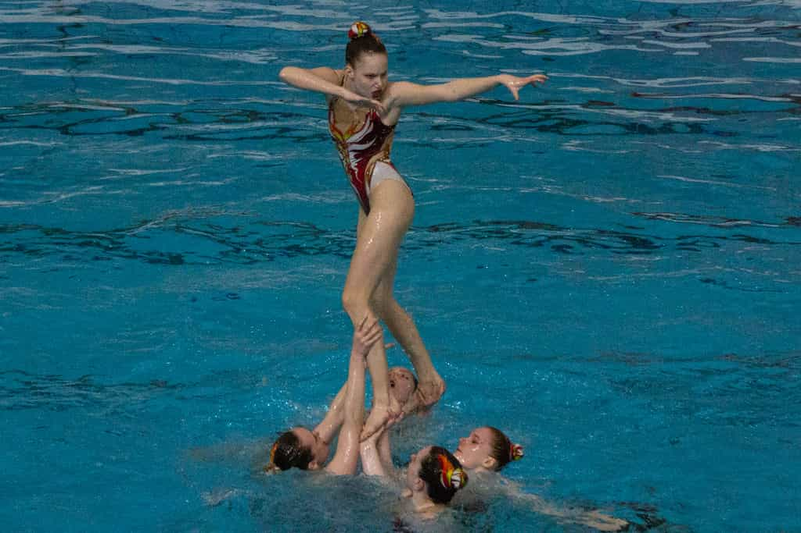

About Artistic Swimming
Artisitc Swimming, formerly known as synchronized swimming, has been a sport since 1891 and has been a sport at the Summer Olympics since 1984. On instruction from the IOC, FINA renamed the sport to artistic swimming. It is both an individual and team sport practiced in the water where athletes perform routines and figures.
Equipment
Cap
Suit
Makeup
Nose Clip